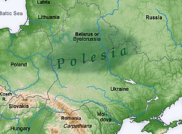
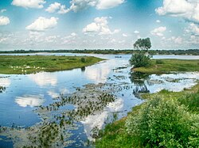
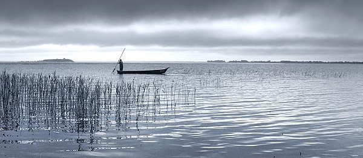
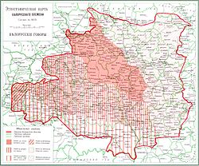

Палессе
Пале́ссе — гісторыка-этнаграфічны рэгіён Беларусі, Украіны, Польшчы. Размешчана ў паўднёва-заходняй частцы Усходне-Еўрапейскай раўніны, у межах Палескай нізіны пераважна паабапал беларуска-ўкраінскай мяжы, а таксама часткова ў Польшчы. Агульная плошча — каля 270 тыс. км². Вышыня — 150—200 м над узроўнем мора.
Палессе — найбуйнейшая з еўрапейскіх балотных тэрыторый. Галоўныя рэкі Палесся — Прыпяць, Дняпро, Дзясна. У 1960-1980-я гг. землі Палесся былі значна меліярыраваны.
Геаграфічнае становішча, межы
Палеская правінцыя ахоплівае поўдзень Беларусі, поўнач Украіны, заходзіць на тэрыторыю Польшчы. Паверхня — плоскаўвагнутая пясчаная нізіна з высокім узроўнем грунтавых вод. Большая частка тэрыторыі дрэнуецца р. Прыпяць і яе прытокамі. Межы правінцыі выяўляюцца ў рэльефе, будове антрапагенавых адкладаў, глебах, расліннасці. На паўднёвым захадзе гэта мяжа ўяўляе сабой невысокі ўступ лёсавай раўніны да пясчанай нізіны, на левабярэжжы Дняпра ландшафты зоны мяшаных лясоў па шырокіх тэрасах паступова пераходзяць у лесастэпавыя.
Паводле этнаграфічнага прынцыпу на тэрыторыі Беларускага Палесся вылучаюць раёны Усходняга і Заходняга Палесся. Усходняе Палессе займае вялікую тэрыторыю Палескай нізіны ад рэчышча Дняпра на ўсходзе да Гарыні, прытока Прыпяці, на захадзе. Усходняе Палессе таксама вядома ў этнаграфічных даследаваннях як Мазырскае Палессе.
Прырода
Геалагічная будова
Крышталічны фундамент складзены з архейска-пратэразойскіх метамарфізаваных парод, мае разломна-блочную будову, апускаецца да 6—8 км, перакрыты асадкавымі пародамі. Нізіна сфарміравалася на тэктанічных структурах Валына-Падольскай пліты, Рускай пліты ды Украінскага шчыта. У платформавым чахле пашыраны адклады верхняга пратэразою, палеазою (дэвону і інш.), мезазою, кайназою. Пароды антрапагену ствараюць покрыва магутнасцю ў ледавіковых лагчынах да 200 м, на поўдні і ўсходзе іх магутнасць не перавышае 50 м. Пашыраны флювіягляцыяльныя, алювіяльныя, азёрна-алювіяльныя пяскі і супескі, а таксама марэнныя і балотныя адклады. На Украінскім шчыце старажытны крышталічны фундамент месцамі выходзіць на паверхню.
Карысныя выкапні: нафта, гаручыя сланцы, буры вугаль, торф, калійныя і каменная солі, будаўнічы і абліцовачны камень, пяскі, жвір, гліны і інш.
Розныя паводле геалагічнай структуры часткі Палескай нізіны аб’яднаны ў адзіную вобласць па гіпсаметрычных
характарыстыках, што адлюстроўвае і агульнасць іх геамарфалагічнага развіцця ў неагене і антрапагене.
Неаднароднасць геалагічных структур абумовіла адрозненні ў асаблівасцях рэльефу. У будове чацвярцічнай
тоўшчы пераважаюць водна-ледавіковыя і ледавіковыя пароды. Асноўныя формы рэльефу ўтвораны дняпроўскім ледавіком
і расталымі водамі сожскага ледавіка. У эпоху максімальнага (дняпроўскага) зледзянення ледавік распаўсюджваўся
на ўсё Палессе. Пры яго адступленні палескія нізіны пакрываліся расталымі водамі і запаўняліся пясчанымі
наносамі. Сожскае зледзяненне істотна змяніла рэльеф. Палескія нізіны былі арэнай дзейнасці ледавіковых вод, што
адклалі тут шмат пясчанага матэрыалу. Да гэтага зледзянення адносіцца фарміраванне другіх надпоймавых тэрас
многіх палескіх рэк. Мяжа больш позняга, паазерскага, зледзянення знаходзілася на поўначы. У гэты час адбывалася
фарміраванне алювію першых надпоймавых тэрас у рачных далінах. З гэтага перыяду захавалася шмат азёр і балот.
Значная рэльефаўтваральная роля належыць эразійна-акумулятыўнай дзейнасці Прыпяці, іншых буйных рэк, старажытных
і сучасных азёр, балотаўтваральным і эолавым працэсам.
Хоць большая частка Палесся і знаходзілася пад дняпроўскім ледавіком, аднак марэна тут захавалася слаба, як вынік размыву яе водна-ледавіковымі патокамі. Пасля адступлення ледавіка тут існаваў вялікі вадаём, асушэнне якога было звязана з фарміраваннем і ўрэзам рэк Дняпра, Прыпяці, Дзясны і інш.
Геамарфалогія, рэльеф
На Палессі пераважаюць водна-ледавіковыя, азёрна-алювіяльныя і алювіяльныя формы рэльефу. Трапляюцца марэнныя раўніны і канцова-марэнны градава-ўваліста-ўзгорысты рэльеф. Цэнтральную найбольш паніжаную частку тэрыторыі (105—140 м) уздоўж Прыпяці і Дняпра займаюць Палеская і Прыдняпроўская нізіны з слабахвалістым і плоскім рэльефам, ускладненым дзюнна-ўзгорыстымі формамі, лагчынамі сцёку, затарфаванымі катлавінамі. 3 захаду і ўсходу да іх далучаюцца хвалістыя водна-ледавіковыя, месцамі марэнныя раўніны — Прыбугская, Загароддзе, Церахоўская, Хойніцка-Брагінская (140—150 м). Тут жа трапляюцца дэнудаваныя марэнныя грады — Лагішынская, Вятчынска-Чалюшчавіцкая, Камянецкая з дробнаўзгорыстым рэльефам (160—170 м). Узгорыста-градавы канцова-марэнны рэльеф прадстаўлены Мазырскай градой (да 221 м). Рачныя даліны маюць шырокія поймы і тэрасы. На паніжаных участках характэрныя балоты і забалочаныя тэрыторыі з азёрнымі катлавінамі.
Шырокая даліна Буга абмяжоўвае з захаду Брэсцкае Палессе. Далей паверхня павышаецца на ўсход, дзе знаходзіцца раўніна Загароддзе (да 179 м), што з’яўляецца часткай Балтыйска-Чарнаморскага водападзелу. Загароддзе ўтворана ледавіковымі і водна-ледавіковымі адкладамі. У паўночнай частцы вылучаюць краявы ледавіковы комплекс, у паўднёвай — паніжаную, пераважна водна-ледавіковую раўніну. Паверхня паўночнай часткі ўзгорыста-градавая, перасечаная. Уздоўж правабярэжжа Ясельды працягнулася канцова-марэнная града з адорвенямі даантрапагенавых парод і гляцыядыслакацыямі на паўночных схілах. На поўдзень ад яе спадзіста-хвалістая і плоская водна-ледавіковая раўніна, уздоўж паўднёвай ускраіны якой пашыраны пясчаныя дзюны, грады і ўзгоркі. Характэрны пласкадонныя забалочаныя лагчыны.
Паўднёва-заходнюю частку правінцыі займае Валынскае Палессе, прымеркаванае да Галіцка-Валынскай упадзіны Валына-Падольскай пліты. Тут прыкметны ўплыў трэшчынаватых мелавых парод, якія залягаюць блізка да паверхні. З дзейнасцю праточных вод звязана ўтварэнне эразійна-дэнудацыйнай паверхні, зыходнай для сучаснага рэльефу. У межах тэрыторый з самым нізкім гіпсаметрычным становішчам у далейшым адбывалася назапашванне алювію. Антрапагенавыя адклады прадстаўленыя пераважна пяскамі.
Вызначальным фактарам прыроднай своеасаблівасці Жытомірскага Палесся з’яўляецца яго становішча ў межах паўночна-заходняй часткі Украінскага шчыта. Сярод найбольш важных рысаў адносна высокае гіпсаметрычнае становішча, значная роля крышталічных парод, развіццё вузкіх, глыбока ўрэзаных рачных далін, наяўнасць вялікіх лёсавых астравоў і значна меншая забалочанасць тэрыторыі.
Мазырскае Палессе — большай часткай пласкахвалістая водна-ледавіковая раўніна з асобнымі дэнудаванымі ўзгоркамі. Вылучаюцца шырокія лагчыны з тарфянікамі. У паўночна-ўсходняй частцы на правабярэжжы Прыпяці захаваліся краявыя ледавіковыя ўтварэнні Мазырскай грады (да 221 м). Града складзена з марэны, якая перакрыта водна-ледавіковымі пяскамі з рэдкай галькай і жвірам, месцамі — лёсападобнымі супескамі, трапляюцца гляцыядыслакацыі з палеагенавых і неагенавых парод, звернутыя да Прыпяці схілы стромкія, абрывістыя, глыбіня яроў дасягае 40—60 м. На левабярэжжы Прыпяці знаходзіцца невялікае Юравіцкае ўзвышша, якое ў канцы паазерскага зледзянення аддзялілася ад Мазырскай грады ў выніку прарыву яе водамі Прыпяці. На Мазырскім Палессі сустракаюцца дзюны, затарфаваныя катлавіны, даліны рэк звычайна маюць нязначную глыбіню, забалочаныя.
Чарнігаўскае Палессе распрасціраецца на ўсход ад Дняпра, у межах Дняпроўска-Данецкай упадзіны. Палеагенавыя і неагенавыя адклады залягаюць тут вышэй мясцовых базісаў эрозіі і аказваюць непасрэдны ўплыў на прыродныя ўмовы. Сярод антрапагенавых адкладаў найбольш распаўсюджаны ледавіковыя, водна-ледавіковыя і алювіяльныя, марэна ў асноўным размыта, характэрна значная колькасць лёсавых астравоў. Шырока прадстаўлены эразійныя формы рэльефу — сучасныя і старажытныя рачныя даліны, тэрасы. Значная колькасць балотных масіваў.
Дзяснянскае Палессе — самая ўсходняя з палескіх падправінцый, знаходзіцца на мяжы з Сярэднерускім узвышшам. Тэрыторыя размяшчаецца на паўднёва-заходнім схіле Варонежскай антэклізы. У рачных далінах часта агаляюцца мелавыя адклады, прадстаўленыя мергелем і мелам, месцамі на іх захаваліся плямы палеагенавых адкладаў. Невялікая тоўшча антрапагенавых асадкаў прадстаўлена марэнай, водна-ледавіковымі, алювіяльнымі, элювіяльнымі адкладамі і лёсападобнымі суглінкамі. Буйныя рачныя даліны глыбока ўрэзаны ў карэнныя пароды, а на іх схілах развіты яры і балкі. На мелавых адкладах утварыліся карставыя формы рэльефу (лейкі, правалы). Балоты тут займаюць значна меншыя плошчы і не ўтвараюць буйных масіваў.
Клімат
Клімат Палесся адносна цёплы, няўстойліва вільготны. Сярэдняя тэмпература студзеня ад -4 да -7 °С, ліпеня ад 18 да 19 °С. Зімовыя тэмпературы павялічваюцца з усходу на захад, летнія з поўначы на поўдзень. Вегетацыйны перыяд працягваецца каля 200 сут. Гадавая колькасць ападкаў вагаецца ад 500 да 650 мм. Снегавое покрыва трымаецца да 100 дзён. Пры перамяшчэнні на паўднёвы ўсход колькасць ападкаў памяншаецца, а летнія тэмпературы растуць, гэта набліжае клімат да лесастэпавага.
Унутраныя воды
Рэкі Дняпро і яго прытокі Сож, Бярэзіна, Прыпяць, Дзясна і інш. належаць да басейна
Чорнага мора; Заходні Буг з прытокамі — да басейна Балтыйскага мора.
Пры невялікіх абсалютных вышынях
паверхні ўрэз рачных далін нязначны, цячэнне павольнае, характэрны шырокія забалочаныя поймы, рэчышчы зарастаюць
азёрна-балотнай расліннасцю. Буйныя рэкі маюць шырокія даліны са шматлікімі старыцамі.
Значная частка вод паступае з прылеглых узвышшаў. Істотнае значэнне маюць талыя і дажджавыя воды, якія выклікаюць разводдзі (да катастрафічных). У гэты перыяд пад'ём вады ў р. Прыпяць дасягае 4—5 м (часам 6—7 м), шырыня разліваў Прыпяці 5—15 км, месцамі да 25 км. Перыяд разводдзяў доўжыцца 40—90 дзён.
Буйныя азёры-разлівы (Чырвонае, Выганашчанскае і інш.) ляжаць у плоскіх забалочаных паніжэннях. У карставых катлавінах утварыліся азёры Свіцязь, Пулемецкае і інш. У поймах рэк мноства старычных азёр.
Асаблівасці рэльефу вызначаюць дрэнаж мясцовасці, высокую ступень забалочанасці Палесся. Балоты тут пераважна нізіннныя, што вызначаецца размяшчэннем правінцыі на поўдні лясной зоны. У выніку асушэння забалочаных зямель створана густая сетка меліярацыйных каналаў і канаў, а таксама вадасховішчы.
Глебы
Глебаўтваральнымі пародамі служаць пераважна пяскі, на ўзвышшах і раўнінах глебы развіваюцца на марэнных і лёсападобных супесках. Пашыраны забалочаныя глебы (дзярнова-падзолістыя забалочаныя, дзярнова-глеістыя, тарфяна-балотныя), значная частка іх асушана. У поймах рэк вялікая доля алювіяльных (поймавых) глеб. Занальныя дзярнова-падзолістыя глебы займаюць да паловы тэрыторыі. На лёсападобных адкладах развіваюцца дзярнова-палева-падзолістыя сугліністыя глебы. На мелавых пародах Валынскага Палесся сфарміраваліся перагнойна-карбанатныя глебы. У паўднёва-ўсходняй частцы правінцыі глебаўтварэнне адбываецца ва ўмовах блізкіх да лесастэпаў, тут сустракаюцца светла-шэрыя, шэрыя ападзоленыя і шэрыя лясныя глебы, а на Чарнігаўскім Палессі на лёсавых адкладах пры блізкім заляганні грунтовых вод можна сустрэць і засоленыя глебы.
Расліннасць
Правінцыя багатая лясамі, у сярэднім цячэнні Прыпяці яны пакрываюць каля паловы тэрыторыі. Значна меншыя паказчыкі лясістасці на поўдні і ўсходзе Палесся, на мяжы з лесастэпам. У структуры лясоў дамінуюць хваёвыя, у т.л. шыракаліста-хваёвыя, і драбналістыя карэнныя фармацыі. На поўначы трапляюцца ўчасткі шыракаліста-яловых лясоў. На марэнных узвышшах, раўнінах і тэрасах развіваюцца шыракалістыя лясы, пераважна дубовыя, дубова-грабавыя, ясянёва-дубовыя і ясянёвыя, на нізінных балотах чорнаалешнікавыя і пушыстабярозавыя, у поймах рэк дубровы і алешнікі.
Найбольш пашыраны згуртаванні, у якіх пераважае хвоя звычайная. Хваёвыя бары пануюць на пясчаных і супясчаных глебах. У барах Палесся няма некаторых паўночных відаў (напр. ядлоўца), затое сустракаюцца лесатэпавыя (дрок, ракітнік і інш.). На другім месцы па распаўсюджанасці бяроза павіслая. Бярозавыя лясы маюць у асноўным другаснае паходжанне, фарміруюцца пасля вырубак. Бярэзнікі часта займаюць супясчаныя глебы, трапляюцца на тарфяна-балотных глебах — з бярозай пушыстай. Вольха чорная стварае згуртаванні ўздоўж рэк, берагоў стаячых вадаёмаў, ручаёў, па краях балот, у паніжэннях рэльефу з высокай насычанасцю глебы праточнай вадою. Дубовыя лясы ў значнай ступені вырубаны, цяпер дуб звычайны аднаўляецца, шмат маладых дрэў сустракаецца ў другім ярусе лясных згуртаванняў. Сваеасаблівая лясная фармацыя створана дубам скальным на камяністых глебах Славечанска-Оўруцкага кража. У лясах растуць таксама асіна, ясень, вяз, граб, ліпа, клён. Сярод інтрадукаваных відаў на поўдні адзначаецца белая акацыя, што высаджвалася на лёсавых адкладах для барацьбы з эрозіяй.
Вельмі распаўсюджаныя на Палессі поймавыя лугі і адкрытыя балоты. Высакатраўныя нізінныя балоты характэрны для правабярэжжа Прыпяці, асаковыя і гіпнава-асаковыя балоты асабліва распаўсюджаны ў нізінных міжрэччах на поўначы Палесся (Выганашчанскае і інш.). Лясныя нізінныя балоты прадстаўленыя алешнікамі і бярэзнікамі. Вярховыя балоты ў асноўным слабавыпуклыя, парослыя хвойнікам сфагнавыя тарфянікі з травяна-кусцікавым покрывам. Асушаныя масівы выкарыстоўваюцца як сельскагаспадарчыя землі. У поймах рэк распаўсюджаны злакавыя гідрамезафільныя і астэпаваныя луті.
Мова
Яшчэ ў 1903 г. вядомым вучоным і мовазнаўцам Я. Карскім была складзена «Этнаграфічная карта беларускага племені», якая з'явілася пасля шматлікіх дасладаванняў. Вобласць выкарыстання паўднёвага (палескага) дыялекту, згодна з картай, можна вызначыць на поўдзень ад мяжы Слонім — Слуцк — Гомель. Тут вучоным адзначаны дыялект з цвёрдым «р», умераным «аканнем» (адзначана вымаўленне ў ненаціскных пазіцыях: вада, галава). Таксама пазначым, што на поўдзень ад сучаснай мяжы Пружаны — Лунінец — Тураў, Я. Карскі гаворыць аб выкарыстанні ўкраінскіх гаворак.
Гістарычна, у сувязі з вялікім працэнтам яўрэйскага насельніцтва (у Пінску да 80 %), якое пражывала на гэтай тэрыторыі да вайны, карысталіся мовай ідыш, у горадзе таксама размаўлялі па-руску. Мовай больш высокіх колаў грамадства была польская. Яна пачала страчваць свае пазіцыі пасля паўстання 1863—1864 у сувязі з масавым засяленнем тэрыторыі носьбітамі рускай мовы: чыноўнікамі, вайскоўцамі, чыгуначнымі рабочымі. У перыяд з 1921 па 1939 г. назіралася масавая паланізацыя гэтых зямель. Таксама развівалася ўкраінская мова, у перыяд грамадзянскіх войнаў і нястач 1920-х гг. назіралася ўкраінізацыя Палесся.
Сёння на Палессі ў дзяржаўных установах пераважае руская мова. Беларуская мова часткова страціла сваё значэнне, мясцовае насельніцтва карыстаецца дыялектам, ужывае трасянку. Польская і ўкраінская мовы выкарыстоўваюцца ў асноўным як мовы нацыянальных меншасцей.
Рухам «Полісьсе» ў канцы 1980-х гг. была створана так званая заходнепалеская мікрамова.